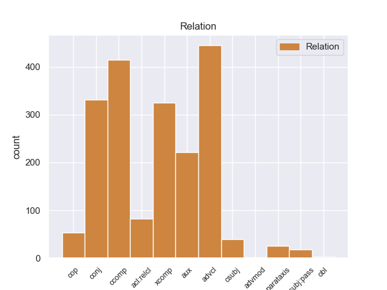
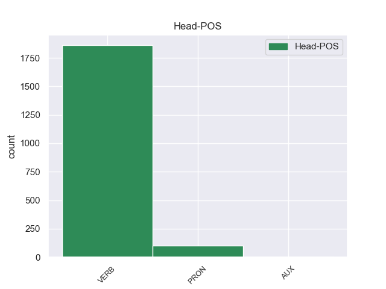
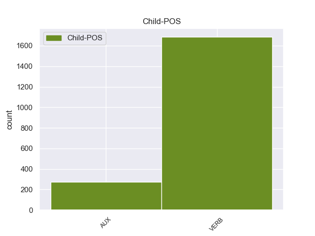

Distribution of features within this leaf



Agreement Rules sorted by frequency.
- When the dependent token is the adverbial clause modifier(advcl) of the head token, and the dependent token is VERB.
1 Αν _ _ _ _ 0 _ _ _
2 αντιμετωπίσουμε αντιμετωπίζω VERB VERB Aspect=Perf|Mood=Ind|Number=Plur|Person=1|VerbForm=Fin|Voice=Act 13 advcl _ _
3 μελλοντικά _ _ _ _ 0 _ _ _
4 με _ _ _ _ 0 _ _ _
5 τον _ _ _ _ 0 _ _ _
6 τρόπο _ _ _ _ 0 _ _ _
7 αυτόν _ _ _ _ 0 _ _ _
8 την _ _ _ _ 0 _ _ _
9 αποστολή _ _ _ _ 0 _ _ _
10 μας _ _ _ _ 0 _ _ _
11 , _ _ _ _ 0 _ _ _
12 θα _ _ _ _ 0 _ _ _
13 σημειώσουμε σημειώνω VERB VERB Aspect=Perf|Mood=Ind|Number=Plur|Person=1|VerbForm=Fin|Voice=Act 0 _ _ _
14 επιτυχίες _ _ _ _ 0 _ _ _
15 . _ _ _ _ 0 _ _ _
1 Θα _ _ _ _ 0 _ _ _
2 ήθελα θέλω VERB VERB Aspect=Imp|Mood=Ind|Number=Sing|Person=1|Tense=Past|VerbForm=Fin|Voice=Act 0 _ _ _
3 να _ _ _ _ 0 _ _ _
4 επιστήσω εφιστώ VERB VERB Aspect=Perf|Mood=Ind|Number=Sing|Person=1|VerbForm=Fin|Voice=Act 2 ccomp _ _
5 την _ _ _ _ 0 _ _ _
6 προσοχή _ _ _ _ 0 _ _ _
7 όλων _ _ _ _ 0 _ _ _
8 των _ _ _ _ 0 _ _ _
9 συναδέλφων _ _ _ _ 0 _ _ _
10 σ _ _ _ _ 0 _ _ _
11 το _ _ _ _ 0 _ _ _
12 γεγονός _ _ _ _ 0 _ _ _
13 ότι _ _ _ _ 0 _ _ _
14 , _ _ _ _ 0 _ _ _
15 εάν _ _ _ _ 0 _ _ _
16 υπάρχουν _ _ _ _ 0 _ _ _
17 κάποιες _ _ _ _ 0 _ _ _
18 ελευθερίες _ _ _ _ 0 _ _ _
19 οι _ _ _ _ 0 _ _ _
20 οποίες _ _ _ _ 0 _ _ _
21 είναι _ _ _ _ 0 _ _ _
22 ζωτικής _ _ _ _ 0 _ _ _
23 σημασίας _ _ _ _ 0 _ _ _
24 για _ _ _ _ 0 _ _ _
25 την _ _ _ _ 0 _ _ _
26 άσκηση _ _ _ _ 0 _ _ _
27 του _ _ _ _ 0 _ _ _
28 λειτουργήματος _ _ _ _ 0 _ _ _
29 της _ _ _ _ 0 _ _ _
30 δημόσιας _ _ _ _ 0 _ _ _
31 εκπροσώπησης _ _ _ _ 0 _ _ _
32 , _ _ _ _ 0 _ _ _
33 ιδίως _ _ _ _ 0 _ _ _
34 για _ _ _ _ 0 _ _ _
35 ένα _ _ _ _ 0 _ _ _
36 Κοινοβούλιο _ _ _ _ 0 _ _ _
37 σαν _ _ _ _ 0 _ _ _
38 το _ _ _ _ 0 _ _ _
39 δικό _ _ _ _ 0 _ _ _
40 μας _ _ _ _ 0 _ _ _
41 , _ _ _ _ 0 _ _ _
42 η _ _ _ _ 0 _ _ _
43 ελευθερία _ _ _ _ 0 _ _ _
44 της _ _ _ _ 0 _ _ _
45 επικοινωνίας _ _ _ _ 0 _ _ _
46 με _ _ _ _ 0 _ _ _
47 άλλους _ _ _ _ 0 _ _ _
48 πολίτες _ _ _ _ 0 _ _ _
49 και _ _ _ _ 0 _ _ _
50 με _ _ _ _ 0 _ _ _
51 τους _ _ _ _ 0 _ _ _
52 πολίτες _ _ _ _ 0 _ _ _
53 τρίτων _ _ _ _ 0 _ _ _
54 χωρών _ _ _ _ 0 _ _ _
55 , _ _ _ _ 0 _ _ _
56 καθώς _ _ _ _ 0 _ _ _
57 και _ _ _ _ 0 _ _ _
58 η _ _ _ _ 0 _ _ _
59 ελευθερία _ _ _ _ 0 _ _ _
60 μετακίνησης _ _ _ _ 0 _ _ _
61 , _ _ _ _ 0 _ _ _
62 είναι _ _ _ _ 0 _ _ _
63 κρίσιμες _ _ _ _ 0 _ _ _
64 για _ _ _ _ 0 _ _ _
65 τη _ _ _ _ 0 _ _ _
66 διεκπεραίωση _ _ _ _ 0 _ _ _
67 του _ _ _ _ 0 _ _ _
68 έργου _ _ _ _ 0 _ _ _
69 μας _ _ _ _ 0 _ _ _
70 . _ _ _ _ 0 _ _ _
1 Μόνο _ _ _ _ 0 _ _ _
2 με _ _ _ _ 0 _ _ _
3 αυτόν _ _ _ _ 0 _ _ _
4 μπορούν μπορώ VERB VERB Aspect=Imp|Mood=Ind|Number=Plur|Person=3|Tense=Pres|VerbForm=Fin|Voice=Act 0 _ _ _
5 να _ _ _ _ 0 _ _ _
6 γίνουν γίνομαι VERB VERB Aspect=Perf|Mood=Ind|Number=Plur|Person=3|VerbForm=Fin|Voice=Pass 4 xcomp _ _
7 διαπραγματεύσεις _ _ _ _ 0 _ _ _
8 . _ _ _ _ 0 _ _ _
1 δεν _ _ _ _ 0 _ _ _
2 έδιναν _ _ _ _ 0 _ _ _
3 συνάλλαγμα _ _ _ _ 0 _ _ _
4 ή _ _ _ _ 0 _ _ _
5 καθόριζαν καθορίζω VERB VERB Aspect=Imp|Mood=Ind|Number=Plur|Person=3|Tense=Past|VerbForm=Fin|Voice=Act 0 _ _ _
6 τις _ _ _ _ 0 _ _ _
7 ανώτατες _ _ _ _ 0 _ _ _
8 δυνατές _ _ _ _ 0 _ _ _
9 τιμές _ _ _ _ 0 _ _ _
10 συναλλάγματος _ _ _ _ 0 _ _ _
11 και _ _ _ _ 0 _ _ _
12 το _ _ _ _ 0 _ _ _
13 χειρότερο _ _ _ _ 0 _ _ _
14 , _ _ _ _ 0 _ _ _
15 επιχειρούσαν επιχειρώ VERB VERB Aspect=Perf|Mood=Ind|Number=Plur|Person=3|Tense=Past|VerbForm=Fin|Voice=Act 5 conj _ _
16 να _ _ _ _ 0 _ _ _
17 τιμολογήσουν _ _ _ _ 0 _ _ _
18 αυτή _ _ _ _ 0 _ _ _
19 τη _ _ _ _ 0 _ _ _
20 διαδικασία _ _ _ _ 0 _ _ _
21 . _ _ _ _ 0 _ _ _
1 Η _ _ _ _ 0 _ _ _
2 εφαρμογή _ _ _ _ 0 _ _ _
3 σε _ _ _ _ 0 _ _ _
4 οδηγούς _ _ _ _ 0 _ _ _
5 από _ _ _ _ 0 _ _ _
6 την _ _ _ _ 0 _ _ _
7 ΕΕ _ _ _ _ 0 _ _ _
8 θα _ _ _ _ 0 _ _ _
9 πρέπει πρέπει AUX AUX Aspect=Imp|Mood=Ind|Number=Sing|Person=3|Tense=Pres|VerbForm=Fin|Voice=Act 11 aux _ _
10 να _ _ _ _ 0 _ _ _
11 πραγματοποιηθεί πραγματοποιώ VERB VERB Aspect=Perf|Mood=Ind|Number=Sing|Person=3|VerbForm=Fin|Voice=Pass 0 _ _ _
12 μόνο _ _ _ _ 0 _ _ _
13 εφόσον _ _ _ _ 0 _ _ _
14 η _ _ _ _ 0 _ _ _
15 αξιολόγηση _ _ _ _ 0 _ _ _
16 του _ _ _ _ 0 _ _ _
17 ισχύοντος _ _ _ _ 0 _ _ _
18 κανονισμού _ _ _ _ 0 _ _ _
19 δείξει _ _ _ _ 0 _ _ _
20 ότι _ _ _ _ 0 _ _ _
21 αυτή _ _ _ _ 0 _ _ _
22 θα _ _ _ _ 0 _ _ _
23 είχε _ _ _ _ 0 _ _ _
24 πραγματικά _ _ _ _ 0 _ _ _
25 προστιθέμενη _ _ _ _ 0 _ _ _
26 αξία _ _ _ _ 0 _ _ _
27 . _ _ _ _ 0 _ _ _
1 Τεράστιος _ _ _ _ 0 _ _ _
2 είναι _ _ _ _ 0 _ _ _
3 και _ _ _ _ 0 _ _ _
4 ο _ _ _ _ 0 _ _ _
5 αριθμός _ _ _ _ 0 _ _ _
6 των _ _ _ _ 0 _ _ _
7 ανθρώπων _ _ _ _ 0 _ _ _
8 που _ _ _ _ 0 _ _ _
9 έχουν _ _ _ _ 0 _ _ _
10 μείνει _ _ _ _ 0 _ _ _
11 άστεγοι _ _ _ _ 0 _ _ _
12 , _ _ _ _ 0 _ _ _
13 καθώς _ _ _ _ 0 _ _ _
14 ανέρχονται _ _ _ _ 0 _ _ _
15 περίπου _ _ _ _ 0 _ _ _
16 σ _ _ _ _ 0 _ _ _
17 τους _ _ _ _ 0 _ _ _
18 50.000 _ _ _ _ 0 _ _ _
19 , _ _ _ _ 0 _ _ _
20 ενώ _ _ _ _ 0 _ _ _
21 πολλοί _ _ _ _ 0 _ _ _
22 είναι _ _ _ _ 0 _ _ _
23 εκείνοι εκείνος PRON PRON Case=Nom|Gender=Masc|Number=Plur|Person=3|PronType=Dem 0 _ _ _
24 που _ _ _ _ 0 _ _ _
25 πέρασαν περνώ VERB VERB Aspect=Perf|Mood=Ind|Number=Plur|Person=3|Tense=Past|VerbForm=Fin|Voice=Act 23 acl:relcl _ _
26 τη _ _ _ _ 0 _ _ _
27 νύχτα _ _ _ _ 0 _ _ _
28 σε _ _ _ _ 0 _ _ _
29 στρατώνες _ _ _ _ 0 _ _ _
30 και _ _ _ _ 0 _ _ _
31 σχολεία _ _ _ _ 0 _ _ _
32 . _ _ _ _ 0 _ _ _
1 Το _ _ _ _ 0 _ _ _
2 μόνο _ _ _ _ 0 _ _ _
3 συνεπώς _ _ _ _ 0 _ _ _
4 που _ _ _ _ 0 _ _ _
5 μπορούσαν _ _ _ _ 0 _ _ _
6 να _ _ _ _ 0 _ _ _
7 κάνουν _ _ _ _ 0 _ _ _
8 ήταν είμαι AUX AUX Aspect=Imp|Mood=Ind|Number=Sing|Person=3|Tense=Past|VerbForm=Fin|Voice=Pass 10 cop _ _
9 ν' _ _ _ _ 0 _ _ _
10 αυξήσουν αυξάνω VERB VERB Aspect=Perf|Mood=Ind|Number=Plur|Person=3|VerbForm=Fin|Voice=Act 0 _ _ _
11 την _ _ _ _ 0 _ _ _
12 επιρροή _ _ _ _ 0 _ _ _
13 τους _ _ _ _ 0 _ _ _
14 σ _ _ _ _ 0 _ _ _
15 τους _ _ _ _ 0 _ _ _
16 πληθυσμούς _ _ _ _ 0 _ _ _
17 της _ _ _ _ 0 _ _ _
18 περιοχής _ _ _ _ 0 _ _ _
19 , _ _ _ _ 0 _ _ _
20 παράλληλα _ _ _ _ 0 _ _ _
21 μ' _ _ _ _ 0 _ _ _
22 εκείνη _ _ _ _ 0 _ _ _
23 προς _ _ _ _ 0 _ _ _
24 τον _ _ _ _ 0 _ _ _
25 Σουλτάνο _ _ _ _ 0 _ _ _
26 σ _ _ _ _ 0 _ _ _
27 τη _ _ _ _ 0 _ _ _
28 Κωνσταντινούπολη _ _ _ _ 0 _ _ _
29 , _ _ _ _ 0 _ _ _
30 για _ _ _ _ 0 _ _ _
31 όσο _ _ _ _ 0 _ _ _
32 χρόνο _ _ _ _ 0 _ _ _
33 θα _ _ _ _ 0 _ _ _
34 " _ _ _ _ 0 _ _ _
35 παρέμενε _ _ _ _ 0 _ _ _
36 " _ _ _ _ 0 _ _ _
37 ( _ _ _ _ 0 _ _ _
38 ή _ _ _ _ 0 _ _ _
39 θα _ _ _ _ 0 _ _ _
40 του _ _ _ _ 0 _ _ _
41 επέτρεπαν _ _ _ _ 0 _ _ _
42 ) _ _ _ _ 0 _ _ _
43 τη _ _ _ _ 0 _ _ _
44 συνέχεια _ _ _ _ 0 _ _ _
45 της _ _ _ _ 0 _ _ _
46 Αυτοκρατορίας _ _ _ _ 0 _ _ _
47 του _ _ _ _ 0 _ _ _
48 , _ _ _ _ 0 _ _ _
49 προκειμένου _ _ _ _ 0 _ _ _
50 να _ _ _ _ 0 _ _ _
51 είναι _ _ _ _ 0 _ _ _
52 έτοιμες _ _ _ _ 0 _ _ _
53 να _ _ _ _ 0 _ _ _
54 υποστηρίξουν _ _ _ _ 0 _ _ _
55 ένα _ _ _ _ 0 _ _ _
56 ή _ _ _ _ 0 _ _ _
57 περισσότερους _ _ _ _ 0 _ _ _
58 από _ _ _ _ 0 _ _ _
59 τους _ _ _ _ 0 _ _ _
60 διαδόχους _ _ _ _ 0 _ _ _
61 του _ _ _ _ 0 _ _ _
62 οθωμανικού _ _ _ _ 0 _ _ _
63 καθεστώτος _ _ _ _ 0 _ _ _
64 που _ _ _ _ 0 _ _ _
65 θα _ _ _ _ 0 _ _ _
66 μπορούσαν _ _ _ _ 0 _ _ _
67 να _ _ _ _ 0 _ _ _
68 ήταν _ _ _ _ 0 _ _ _
69 οι _ _ _ _ 0 _ _ _
70 Σέρβοι _ _ _ _ 0 _ _ _
71 , _ _ _ _ 0 _ _ _
72 οι _ _ _ _ 0 _ _ _
73 Έλληνες _ _ _ _ 0 _ _ _
74 , _ _ _ _ 0 _ _ _
75 οι _ _ _ _ 0 _ _ _
76 Βούλγαροι _ _ _ _ 0 _ _ _
77 , _ _ _ _ 0 _ _ _
78 οι _ _ _ _ 0 _ _ _
79 Αλβανοί _ _ _ _ 0 _ _ _
80 , _ _ _ _ 0 _ _ _
81 ακόμα _ _ _ _ 0 _ _ _
82 και _ _ _ _ 0 _ _ _
83 οι _ _ _ _ 0 _ _ _
84 γηγενείς _ _ _ _ 0 _ _ _
85 Μακεδόνες _ _ _ _ 0 _ _ _
86 , _ _ _ _ 0 _ _ _
87 που _ _ _ _ 0 _ _ _
88 οι _ _ _ _ 0 _ _ _
89 πιθανότητές _ _ _ _ 0 _ _ _
90 να _ _ _ _ 0 _ _ _
91 ιδρύσουν _ _ _ _ 0 _ _ _
92 ανεξάρτητα _ _ _ _ 0 _ _ _
93 έθνη _ _ _ _ 0 _ _ _
94 δεν _ _ _ _ 0 _ _ _
95 ήταν _ _ _ _ 0 _ _ _
96 και _ _ _ _ 0 _ _ _
97 εντελώς _ _ _ _ 0 _ _ _
98 ανύπαρκτες _ _ _ _ 0 _ _ _
99 . _ _ _ _ 0 _ _ _
1 " _ _ _ _ 0 _ _ _
2 Όλοι _ _ _ _ 0 _ _ _
3 εδώ _ _ _ _ 0 _ _ _
4 είναι _ _ _ _ 0 _ _ _
5 τρομαγμένοι _ _ _ _ 0 _ _ _
6 γιατί _ _ _ _ 0 _ _ _
7 κανείς _ _ _ _ 0 _ _ _
8 δεν _ _ _ _ 0 _ _ _
9 ξέρει _ _ _ _ 0 _ _ _
10 τι _ _ _ _ 0 _ _ _
11 πρόκειται πρόκειται VERB VERB Aspect=Imp|Mood=Ind|Number=Sing|Person=3|Tense=Pres|VerbForm=Fin|Voice=Pass 0 _ _ _
12 να _ _ _ _ 0 _ _ _
13 συμβεί συμβαίνω VERB VERB Aspect=Perf|Mood=Ind|Number=Sing|Person=3|VerbForm=Fin|Voice=Act 11 csubj _ SpaceAfter=No
14 " _ _ _ _ 0 _ _ _
15 , _ _ _ _ 0 _ _ _
16 λέει _ _ _ _ 0 _ _ _
17 ο _ _ _ _ 0 _ _ _
18 Γιούντορ _ _ _ _ 0 _ _ _
19 , _ _ _ _ 0 _ _ _
20 κάτοικος _ _ _ _ 0 _ _ _
21 του _ _ _ _ 0 _ _ _
22 Μπαχτσισαράι _ _ _ _ 0 _ _ _
23 . _ _ _ _ 0 _ _ _
1 Η _ _ _ _ 0 _ _ _
2 ακατανόητη _ _ _ _ 0 _ _ _
3 επιδείνωση _ _ _ _ 0 _ _ _
4 της _ _ _ _ 0 _ _ _
5 παρούσας _ _ _ _ 0 _ _ _
6 οδηγίας _ _ _ _ 0 _ _ _
7 την _ _ _ _ 0 _ _ _
8 οποία _ _ _ _ 0 _ _ _
9 πραγματοποιεί _ _ _ _ 0 _ _ _
10 η _ _ _ _ 0 _ _ _
11 Επιτροπή _ _ _ _ 0 _ _ _
12 είναι _ _ _ _ 0 _ _ _
13 , _ _ _ _ 0 _ _ _
14 πιστεύω _ _ _ _ 0 _ _ _
15 , _ _ _ _ 0 _ _ _
16 αδικαιολόγητη _ _ _ _ 0 _ _ _
17 , _ _ _ _ 0 _ _ _
18 εφόσον _ _ _ _ 0 _ _ _
19 η _ _ _ _ 0 _ _ _
20 Επιτροπή _ _ _ _ 0 _ _ _
21 θεωρεί _ _ _ _ 0 _ _ _
22 ότι _ _ _ _ 0 _ _ _
23 δεν _ _ _ _ 0 _ _ _
24 επιτρέπεται επιτρέπω VERB VERB Aspect=Imp|Mood=Ind|Number=Sing|Person=3|Tense=Pres|VerbForm=Fin|Voice=Pass 0 _ _ _
25 να _ _ _ _ 0 _ _ _
26 λαμβάνεται λαμβάνω VERB VERB Aspect=Imp|Mood=Ind|Number=Sing|Person=3|Tense=Pres|VerbForm=Fin|Voice=Pass 24 csubj:pass _ _
27 υπόψη _ _ _ _ 0 _ _ _
28 ο _ _ _ _ 0 _ _ _
29 κύκλος _ _ _ _ 0 _ _ _
30 ζωής _ _ _ _ 0 _ _ _
31 των _ _ _ _ 0 _ _ _
32 προϊόντων _ _ _ _ 0 _ _ _
33 π.χ. _ _ _ _ 0 _ _ _
34 ως _ _ _ _ 0 _ _ _
35 κριτήριο _ _ _ _ 0 _ _ _
36 αξιολόγησης _ _ _ _ 0 _ _ _
37 . _ _ _ _ 0 _ _ _
1 Ωστόσο _ _ _ _ 0 _ _ _
2 , _ _ _ _ 0 _ _ _
3 εκφράζω εκφράζω VERB VERB Aspect=Imp|Mood=Ind|Number=Sing|Person=1|Tense=Pres|VerbForm=Fin|Voice=Act 0 _ _ _
4 ανησυχία _ _ _ _ 0 _ _ _
5 όσον _ _ _ _ 0 _ _ _
6 αφορά _ _ _ _ 0 _ _ _
7 το _ _ _ _ 0 _ _ _
8 ζήτημα _ _ _ _ 0 _ _ _
9 μιας _ _ _ _ 0 _ _ _
10 δικαστικής _ _ _ _ 0 _ _ _
11 απόφασης _ _ _ _ 0 _ _ _
12 που _ _ _ _ 0 _ _ _
13 δεν _ _ _ _ 0 _ _ _
14 είναι _ _ _ _ 0 _ _ _
15 ακόμη _ _ _ _ 0 _ _ _
16 τελεσίδικη _ _ _ _ 0 _ _ _
17 : _ _ _ _ 0 _ _ _
18 ενεργούμε ενεργώ VERB VERB Aspect=Imp|Mood=Ind|Number=Plur|Person=1|Tense=Pres|VerbForm=Fin|Voice=Act 3 parataxis _ _
19 ως _ _ _ _ 0 _ _ _
20 δικαστής _ _ _ _ 0 _ _ _
21 και _ _ _ _ 0 _ _ _
22 ένορκοι _ _ _ _ 0 _ _ _
23 αν _ _ _ _ 0 _ _ _
24 αρνηθούμε _ _ _ _ 0 _ _ _
25 σε _ _ _ _ 0 _ _ _
26 κάποιον _ _ _ _ 0 _ _ _
27 το _ _ _ _ 0 _ _ _
28 δικαίωμα _ _ _ _ 0 _ _ _
29 να _ _ _ _ 0 _ _ _
30 είναι _ _ _ _ 0 _ _ _
31 υποψήφιος _ _ _ _ 0 _ _ _
32 για _ _ _ _ 0 _ _ _
33 μια _ _ _ _ 0 _ _ _
34 σύμβαση _ _ _ _ 0 _ _ _
35 χωρίς _ _ _ _ 0 _ _ _
36 να _ _ _ _ 0 _ _ _
37 έχει _ _ _ _ 0 _ _ _
38 εκδοθεί _ _ _ _ 0 _ _ _
39 τελική _ _ _ _ 0 _ _ _
40 απόφαση _ _ _ _ 0 _ _ _
41 ή _ _ _ _ 0 _ _ _
42 να _ _ _ _ 0 _ _ _
43 έχει _ _ _ _ 0 _ _ _
44 γίνει _ _ _ _ 0 _ _ _
45 ανάλυση _ _ _ _ 0 _ _ _
46 ως _ _ _ _ 0 _ _ _
47 προς _ _ _ _ 0 _ _ _
48 το _ _ _ _ 0 _ _ _
49 αν _ _ _ _ 0 _ _ _
50 ένα _ _ _ _ 0 _ _ _
51 άτομο _ _ _ _ 0 _ _ _
52 είναι _ _ _ _ 0 _ _ _
53 ένοχο _ _ _ _ 0 _ _ _
54 για _ _ _ _ 0 _ _ _
55 ένα _ _ _ _ 0 _ _ _
56 αδίκημα _ _ _ _ 0 _ _ _
57 ή _ _ _ _ 0 _ _ _
58 όχι _ _ _ _ 0 _ _ _
59 . _ _ _ _ 0 _ _ _
1 Τι _ _ _ _ 0 _ _ _
2 συνέβη συμβαίνω VERB VERB Aspect=Perf|Mood=Ind|Number=Sing|Person=3|Tense=Past|VerbForm=Fin|Voice=Act 0 _ _ _
3 άραγε άραγε VERB VERB Aspect=Perf|Mood=Ind|Number=Sing|Person=3|Tense=Past|VerbForm=Fin|Voice=Act 2 advmod _ _
4 με _ _ _ _ 0 _ _ _
5 το _ _ _ _ 0 _ _ _
6 ευρώ _ _ _ _ 0 _ _ _
7 ; _ _ _ _ 0 _ _ _
1 Ωστόσο _ _ _ _ 0 _ _ _
2 , _ _ _ _ 0 _ _ _
3 επιδοκιμάζω _ _ _ _ 0 _ _ _
4 το _ _ _ _ 0 _ _ _
5 γεγονός _ _ _ _ 0 _ _ _
6 ότι _ _ _ _ 0 _ _ _
7 αυτή _ _ _ _ 0 _ _ _
8 η _ _ _ _ 0 _ _ _
9 Σύνοδος _ _ _ _ 0 _ _ _
10 Κορυφής _ _ _ _ 0 _ _ _
11 αποσκοπεί αποσκόπτω VERB VERB Aspect=Imp|Mood=Ind|Number=Sing|Person=3|Tense=Pres|VerbForm=Fin|Voice=Act 0 _ _ _
12 επίσης _ _ _ _ 0 _ _ _
13 σ _ _ _ _ 0 _ _ _
14 το _ _ _ _ 0 _ _ _
15 να _ _ _ _ 0 _ _ _
16 δοθεί δίνω VERB VERB Aspect=Perf|Mood=Ind|Number=Sing|Person=3|VerbForm=Fin|Voice=Pass 11 obl _ _
17 ευρύτερη _ _ _ _ 0 _ _ _
18 έμφαση _ _ _ _ 0 _ _ _
19 σ _ _ _ _ 0 _ _ _
20 τις _ _ _ _ 0 _ _ _
21 μεταρρυθμίσεις _ _ _ _ 0 _ _ _
22 των _ _ _ _ 0 _ _ _
23 οικονομιών _ _ _ _ 0 _ _ _
24 μας _ _ _ _ 0 _ _ _
25 σ _ _ _ _ 0 _ _ _
26 την _ _ _ _ 0 _ _ _
27 Ευρώπη _ _ _ _ 0 _ _ _
28 , _ _ _ _ 0 _ _ _
29 ώστε _ _ _ _ 0 _ _ _
30 να _ _ _ _ 0 _ _ _
31 βελτιωθεί _ _ _ _ 0 _ _ _
32 η _ _ _ _ 0 _ _ _
33 ανταγωνιστικότητα _ _ _ _ 0 _ _ _
34 και _ _ _ _ 0 _ _ _
35 η _ _ _ _ 0 _ _ _
36 καινοτομία _ _ _ _ 0 _ _ _
37 . _ _ _ _ 0 _ _ _
Disagree Examples:
1 Μοιάζει _ _ _ _ 0 _ _ _
2 ειρωνεία _ _ _ _ 0 _ _ _
3 τέτοια _ _ _ _ 0 _ _ _
4 δήλωση _ _ _ _ 0 _ _ _
5 να _ _ _ _ 0 _ _ _
6 προέρχεται _ _ _ _ 0 _ _ _
7 από _ _ _ _ 0 _ _ _
8 αυτόν _ _ _ _ 0 _ _ _
9 τον _ _ _ _ 0 _ _ _
10 άνθρωπο _ _ _ _ 0 _ _ _
11 , _ _ _ _ 0 _ _ _
12 αλλά _ _ _ _ 0 _ _ _
13 η _ _ _ _ 0 _ _ _
14 αλήθεια _ _ _ _ 0 _ _ _
15 είναι _ _ _ _ 0 _ _ _
16 ότι _ _ _ _ 0 _ _ _
17 όντως _ _ _ _ 0 _ _ _
18 την _ _ _ _ 0 _ _ _
19 έκανε _ _ _ _ 0 _ _ _
20 και _ _ _ _ 0 _ _ _
21 εγώ _ _ _ _ 0 _ _ _
22 ο _ _ _ _ 0 _ _ _
23 ίδιος _ _ _ _ 0 _ _ _
24 είχα _ _ _ _ 0 _ _ _
25 την _ _ _ _ 0 _ _ _
26 ευκαιρία _ _ _ _ 0 _ _ _
27 να _ _ _ _ 0 _ _ _
28 την _ _ _ _ 0 _ _ _
29 ακούσω _ _ _ _ 0 _ _ _
30 και _ _ _ _ 0 _ _ _
31 δεν _ _ _ _ 0 _ _ _
32 νομίζω νομίζω VERB VERB Aspect=Imp|Mood=Ind|Number=Sing|Person=1|Tense=Pres|VerbForm=Fin|Voice=Act 0 _ _ _
33 ότι _ _ _ _ 0 _ _ _
34 απέχει απέχω VERB VERB Aspect=Imp|Mood=Ind|Number=Sing|Person=3|Tense=Pres|VerbForm=Fin|Voice=Act 32 ccomp _ _
35 πάρα _ _ _ _ 0 _ _ _
36 πολύ _ _ _ _ 0 _ _ _
37 από _ _ _ _ 0 _ _ _
38 την _ _ _ _ 0 _ _ _
39 σημερινή _ _ _ _ 0 _ _ _
40 πραγματικότητα _ _ _ _ 0 _ _ _
41 , _ _ _ _ 0 _ _ _
42 κάτι _ _ _ _ 0 _ _ _
43 που _ _ _ _ 0 _ _ _
44 με _ _ _ _ 0 _ _ _
45 οδηγεί _ _ _ _ 0 _ _ _
46 να _ _ _ _ 0 _ _ _
47 δηλώσω _ _ _ _ 0 _ _ _
48 την _ _ _ _ 0 _ _ _
49 αναγκαιότητα _ _ _ _ 0 _ _ _
50 αναθεώρησης _ _ _ _ 0 _ _ _
51 και _ _ _ _ 0 _ _ _
52 τοποθέτησης _ _ _ _ 0 _ _ _
53 σε _ _ _ _ 0 _ _ _
54 νέες _ _ _ _ 0 _ _ _
55 βάσεις _ _ _ _ 0 _ _ _
56 των _ _ _ _ 0 _ _ _
57 σχέσεων _ _ _ _ 0 _ _ _
58 μεταξύ _ _ _ _ 0 _ _ _
59 βορρά _ _ _ _ 0 _ _ _
60 και _ _ _ _ 0 _ _ _
61 νότου _ _ _ _ 0 _ _ _
62 , _ _ _ _ 0 _ _ _
63 δηλαδή _ _ _ _ 0 _ _ _
64 την _ _ _ _ 0 _ _ _
65 ανάγκη _ _ _ _ 0 _ _ _
66 αναθεώρησης _ _ _ _ 0 _ _ _
67 του _ _ _ _ 0 _ _ _
68 ρόλου _ _ _ _ 0 _ _ _
69 της _ _ _ _ 0 _ _ _
70 Ευρωπαϊκής _ _ _ _ 0 _ _ _
71 Ένωσης _ _ _ _ 0 _ _ _
72 σε _ _ _ _ 0 _ _ _
73 αυτό _ _ _ _ 0 _ _ _
74 το _ _ _ _ 0 _ _ _
75 πλαίσιο _ _ _ _ 0 _ _ _
76 , _ _ _ _ 0 _ _ _
77 εφόσον _ _ _ _ 0 _ _ _
78 είναι _ _ _ _ 0 _ _ _
79 βέβαιο _ _ _ _ 0 _ _ _
80 ότι _ _ _ _ 0 _ _ _
81 η _ _ _ _ 0 _ _ _
82 προώθηση _ _ _ _ 0 _ _ _
83 μίας _ _ _ _ 0 _ _ _
84 νέας _ _ _ _ 0 _ _ _
85 παγκόσμιας _ _ _ _ 0 _ _ _
86 τάξης _ _ _ _ 0 _ _ _
87 δικαιότερης _ _ _ _ 0 _ _ _
88 , _ _ _ _ 0 _ _ _
89 αξιοκρατικότερης _ _ _ _ 0 _ _ _
90 δεν _ _ _ _ 0 _ _ _
91 μπορεί _ _ _ _ 0 _ _ _
92 ούτε _ _ _ _ 0 _ _ _
93 πρέπει _ _ _ _ 0 _ _ _
94 να _ _ _ _ 0 _ _ _
95 πάψει _ _ _ _ 0 _ _ _
96 να _ _ _ _ 0 _ _ _
97 αποτελεί _ _ _ _ 0 _ _ _
98 στρατηγικό _ _ _ _ 0 _ _ _
99 στόχο _ _ _ _ 0 _ _ _
100 της _ _ _ _ 0 _ _ _
101 Ένωσης _ _ _ _ 0 _ _ _
102 . _ _ _ _ 0 _ _ _
1 Μοιάζει _ _ _ _ 0 _ _ _
2 ειρωνεία _ _ _ _ 0 _ _ _
3 τέτοια _ _ _ _ 0 _ _ _
4 δήλωση _ _ _ _ 0 _ _ _
5 να _ _ _ _ 0 _ _ _
6 προέρχεται _ _ _ _ 0 _ _ _
7 από _ _ _ _ 0 _ _ _
8 αυτόν _ _ _ _ 0 _ _ _
9 τον _ _ _ _ 0 _ _ _
10 άνθρωπο _ _ _ _ 0 _ _ _
11 , _ _ _ _ 0 _ _ _
12 αλλά _ _ _ _ 0 _ _ _
13 η _ _ _ _ 0 _ _ _
14 αλήθεια _ _ _ _ 0 _ _ _
15 είναι _ _ _ _ 0 _ _ _
16 ότι _ _ _ _ 0 _ _ _
17 όντως _ _ _ _ 0 _ _ _
18 την _ _ _ _ 0 _ _ _
19 έκανε _ _ _ _ 0 _ _ _
20 και _ _ _ _ 0 _ _ _
21 εγώ _ _ _ _ 0 _ _ _
22 ο _ _ _ _ 0 _ _ _
23 ίδιος _ _ _ _ 0 _ _ _
24 είχα _ _ _ _ 0 _ _ _
25 την _ _ _ _ 0 _ _ _
26 ευκαιρία _ _ _ _ 0 _ _ _
27 να _ _ _ _ 0 _ _ _
28 την _ _ _ _ 0 _ _ _
29 ακούσω _ _ _ _ 0 _ _ _
30 και _ _ _ _ 0 _ _ _
31 δεν _ _ _ _ 0 _ _ _
32 νομίζω _ _ _ _ 0 _ _ _
33 ότι _ _ _ _ 0 _ _ _
34 απέχει _ _ _ _ 0 _ _ _
35 πάρα _ _ _ _ 0 _ _ _
36 πολύ _ _ _ _ 0 _ _ _
37 από _ _ _ _ 0 _ _ _
38 την _ _ _ _ 0 _ _ _
39 σημερινή _ _ _ _ 0 _ _ _
40 πραγματικότητα _ _ _ _ 0 _ _ _
41 , _ _ _ _ 0 _ _ _
42 κάτι _ _ _ _ 0 _ _ _
43 που _ _ _ _ 0 _ _ _
44 με _ _ _ _ 0 _ _ _
45 οδηγεί οδηγώ VERB VERB Aspect=Imp|Mood=Ind|Number=Sing|Person=3|Tense=Pres|VerbForm=Fin|Voice=Act 0 _ _ _
46 να _ _ _ _ 0 _ _ _
47 δηλώσω δηλώνω VERB VERB Aspect=Perf|Mood=Ind|Number=Sing|Person=1|VerbForm=Fin|Voice=Act 45 xcomp _ _
48 την _ _ _ _ 0 _ _ _
49 αναγκαιότητα _ _ _ _ 0 _ _ _
50 αναθεώρησης _ _ _ _ 0 _ _ _
51 και _ _ _ _ 0 _ _ _
52 τοποθέτησης _ _ _ _ 0 _ _ _
53 σε _ _ _ _ 0 _ _ _
54 νέες _ _ _ _ 0 _ _ _
55 βάσεις _ _ _ _ 0 _ _ _
56 των _ _ _ _ 0 _ _ _
57 σχέσεων _ _ _ _ 0 _ _ _
58 μεταξύ _ _ _ _ 0 _ _ _
59 βορρά _ _ _ _ 0 _ _ _
60 και _ _ _ _ 0 _ _ _
61 νότου _ _ _ _ 0 _ _ _
62 , _ _ _ _ 0 _ _ _
63 δηλαδή _ _ _ _ 0 _ _ _
64 την _ _ _ _ 0 _ _ _
65 ανάγκη _ _ _ _ 0 _ _ _
66 αναθεώρησης _ _ _ _ 0 _ _ _
67 του _ _ _ _ 0 _ _ _
68 ρόλου _ _ _ _ 0 _ _ _
69 της _ _ _ _ 0 _ _ _
70 Ευρωπαϊκής _ _ _ _ 0 _ _ _
71 Ένωσης _ _ _ _ 0 _ _ _
72 σε _ _ _ _ 0 _ _ _
73 αυτό _ _ _ _ 0 _ _ _
74 το _ _ _ _ 0 _ _ _
75 πλαίσιο _ _ _ _ 0 _ _ _
76 , _ _ _ _ 0 _ _ _
77 εφόσον _ _ _ _ 0 _ _ _
78 είναι _ _ _ _ 0 _ _ _
79 βέβαιο _ _ _ _ 0 _ _ _
80 ότι _ _ _ _ 0 _ _ _
81 η _ _ _ _ 0 _ _ _
82 προώθηση _ _ _ _ 0 _ _ _
83 μίας _ _ _ _ 0 _ _ _
84 νέας _ _ _ _ 0 _ _ _
85 παγκόσμιας _ _ _ _ 0 _ _ _
86 τάξης _ _ _ _ 0 _ _ _
87 δικαιότερης _ _ _ _ 0 _ _ _
88 , _ _ _ _ 0 _ _ _
89 αξιοκρατικότερης _ _ _ _ 0 _ _ _
90 δεν _ _ _ _ 0 _ _ _
91 μπορεί _ _ _ _ 0 _ _ _
92 ούτε _ _ _ _ 0 _ _ _
93 πρέπει _ _ _ _ 0 _ _ _
94 να _ _ _ _ 0 _ _ _
95 πάψει _ _ _ _ 0 _ _ _
96 να _ _ _ _ 0 _ _ _
97 αποτελεί _ _ _ _ 0 _ _ _
98 στρατηγικό _ _ _ _ 0 _ _ _
99 στόχο _ _ _ _ 0 _ _ _
100 της _ _ _ _ 0 _ _ _
101 Ένωσης _ _ _ _ 0 _ _ _
102 . _ _ _ _ 0 _ _ _
1 Εμείς _ _ _ _ 0 _ _ _
2 σ _ _ _ _ 0 _ _ _
3 το _ _ _ _ 0 _ _ _
4 Κοινοβούλιο _ _ _ _ 0 _ _ _
5 δικαιούμαστε _ _ _ _ 0 _ _ _
6 να _ _ _ _ 0 _ _ _
7 ζητάμε ζητώ VERB VERB Aspect=Perf|Mood=Ind|Number=Plur|Person=1|VerbForm=Fin|Voice=Pass 0 _ _ _
8 από _ _ _ _ 0 _ _ _
9 την _ _ _ _ 0 _ _ _
10 Επιτροπή _ _ _ _ 0 _ _ _
11 να _ _ _ _ 0 _ _ _
12 αναθεωρήσει αναθεωρώ VERB VERB Aspect=Perf|Mood=Ind|Number=Sing|Person=3|VerbForm=Fin|Voice=Act 7 ccomp _ _
13 την _ _ _ _ 0 _ _ _
14 αναπτυξιακή _ _ _ _ 0 _ _ _
15 της _ _ _ _ 0 _ _ _
16 συνεργασία _ _ _ _ 0 _ _ _
17 με _ _ _ _ 0 _ _ _
18 τη _ _ _ _ 0 _ _ _
19 Ζιμπάμπουε _ _ _ _ 0 _ _ _
20 εάν _ _ _ _ 0 _ _ _
21 δεν _ _ _ _ 0 _ _ _
22 διεξαχθούν _ _ _ _ 0 _ _ _
23 διαφανείς _ _ _ _ 0 _ _ _
24 εκλογές _ _ _ _ 0 _ _ _
25 ή _ _ _ _ 0 _ _ _
26 εάν _ _ _ _ 0 _ _ _
27 κερδίσει _ _ _ _ 0 _ _ _
28 η _ _ _ _ 0 _ _ _
29 αντιπολίτευση _ _ _ _ 0 _ _ _
30 και _ _ _ _ 0 _ _ _
31 η _ _ _ _ 0 _ _ _
32 βία _ _ _ _ 0 _ _ _
33 συνεχισθεί _ _ _ _ 0 _ _ _
34 . _ _ _ _ 0 _ _ _
1 Ας _ _ _ _ 0 _ _ _
2 ελπίσουμε ελπίζω VERB VERB Aspect=Imp|Mood=Ind|Number=Plur|Person=1|Tense=Pres|VerbForm=Fin|Voice=Act 0 _ _ _
3 ότι _ _ _ _ 0 _ _ _
4 θα _ _ _ _ 0 _ _ _
5 στεφθεί στέπτομαι VERB VERB Aspect=Perf|Mood=Ind|Number=Sing|Person=3|VerbForm=Fin|Voice=Pass 2 ccomp _ _
6 με _ _ _ _ 0 _ _ _
7 επιτυχία _ _ _ _ 0 _ _ _
8 . _ _ _ _ 0 _ _ _
1 Έστω έστω VERB VERB Aspect=Imp|Mood=Ind|Number=Sing|Person=1|Tense=Pres|VerbForm=Fin|Voice=Act 0 _ _ _
2 κι _ _ _ _ 0 _ _ _
3 αν _ _ _ _ 0 _ _ _
4 πολλές _ _ _ _ 0 _ _ _
5 εξελίξεις _ _ _ _ 0 _ _ _
6 μάς _ _ _ _ 0 _ _ _
7 έκαναν έκανας VERB VERB Aspect=Perf|Mood=Ind|Number=Plur|Person=3|Tense=Past|VerbForm=Fin|Voice=Act 1 conj _ _
8 να _ _ _ _ 0 _ _ _
9 αμφιβάλουμε _ _ _ _ 0 _ _ _
10 , _ _ _ _ 0 _ _ _
11 θεωρούσαμε _ _ _ _ 0 _ _ _
12 εντούτοις _ _ _ _ 0 _ _ _
13 πως _ _ _ _ 0 _ _ _
14 έτσι _ _ _ _ 0 _ _ _
15 είχαν _ _ _ _ 0 _ _ _
16 τα _ _ _ _ 0 _ _ _
17 πράγματα _ _ _ _ 0 _ _ _
18 και _ _ _ _ 0 _ _ _
19 , _ _ _ _ 0 _ _ _
20 μέχρι _ _ _ _ 0 _ _ _
21 πρόσφατα _ _ _ _ 0 _ _ _
22 , _ _ _ _ 0 _ _ _
23 επικαλούμασταν _ _ _ _ 0 _ _ _
24 - _ _ _ _ 0 _ _ _
25 αν _ _ _ _ 0 _ _ _
26 και _ _ _ _ 0 _ _ _
27 κάπως _ _ _ _ 0 _ _ _
28 συγκρατημένα _ _ _ _ 0 _ _ _
29 , _ _ _ _ 0 _ _ _
30 ομολογώ _ _ _ _ 0 _ _ _
31 - _ _ _ _ 0 _ _ _
32 την _ _ _ _ 0 _ _ _
33 αρχή _ _ _ _ 0 _ _ _
34 της _ _ _ _ 0 _ _ _
35 επικουρικότητας _ _ _ _ 0 _ _ _
36 . _ _ _ _ 0 _ _ _